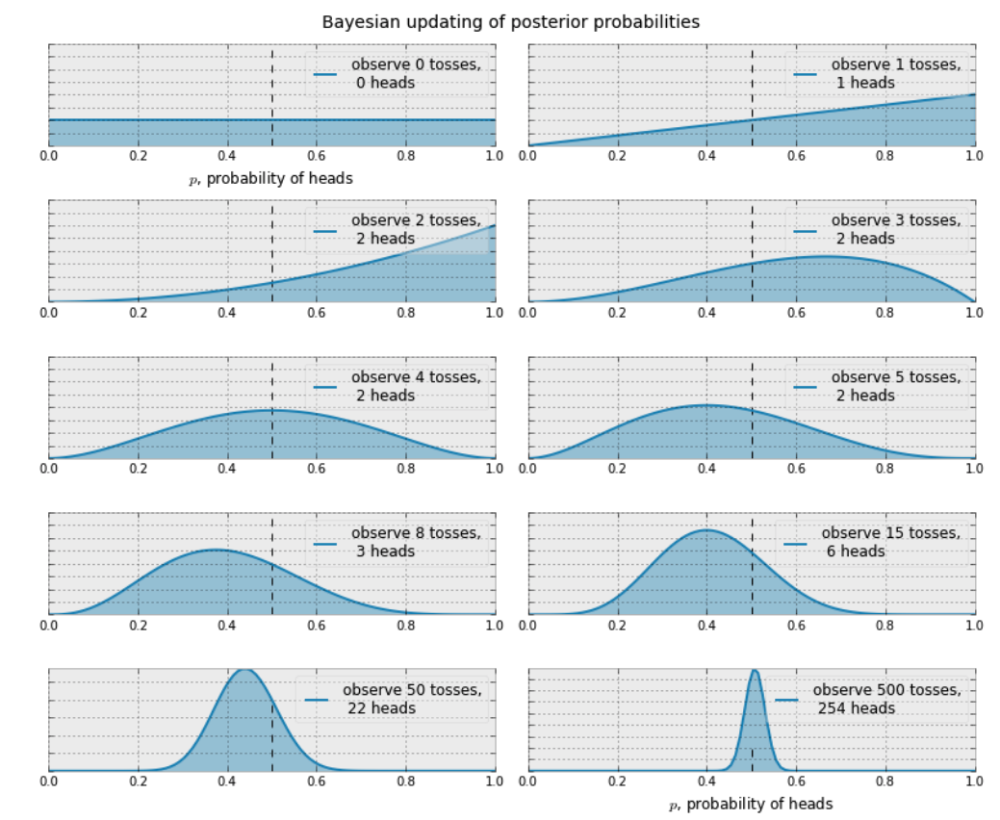

The relevant notebook can be found here
A wonderful Kaggle notebook summarizes it nicely.
Framework
The Bayesian framework is based on conditional probabilities.
Posterior probabilities lead us to update our theory.

The wider the curve, the greater the uncertainty.
Often, we plot the prior probability vs the posterior probability. The x value is the initial probability, and the y value is our updated probability.

Probability Distributions
Discrete
For some discrete random variable , there is a pprobaility mass function which maps to a probability. because it is discrete.
Discrete variables follow the Poisson distribution.
Poisson
Denoted
Properties:
- is the intensity of the distribution. Patterns of lambda include:
- Increasing means bigger values will give bigger probabilities
-
- Decreasing means smaller values will give bigger probabilities
- The expected value is equal to the parameter.
Here's a depiction of the intensity factor,

Continuous
Follows a probability density function.
A common case is the exponential distribution
Properties
We have the expected value identity
What does this mean in English? For some random variable given some coefficient, the expected value of that random variable is equal to the inverse of the coefficient.

Solving for Lambda
Switchpoints
Consider graphing rain in Seattle. Some spans of days are dry, and then all the sudden, it spikes. One might model with a piecewise function based on a switchpoint.
Here, is the switchpoint. We can assign a uniform density function to it, that is, it could be on any one of the 70 days.
Lambda's Continuity
Lambda can be any positive number. Therefore, we need to model it with a PDF.
The exponential density function takes a of it's own. Thus, we need to sub in another variable for that because we're trying to solve for
Hyperparameters
Here, is the hyperparameter, a parameter defining another variable. Generally, these have little effect on the outcome as a whole.
Good practice is to set to the inverse of the data's mean.
Using our expected value identity . . .